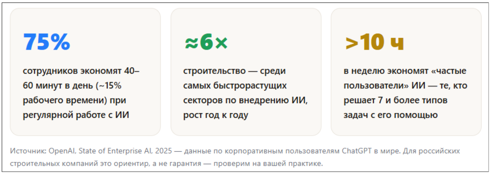
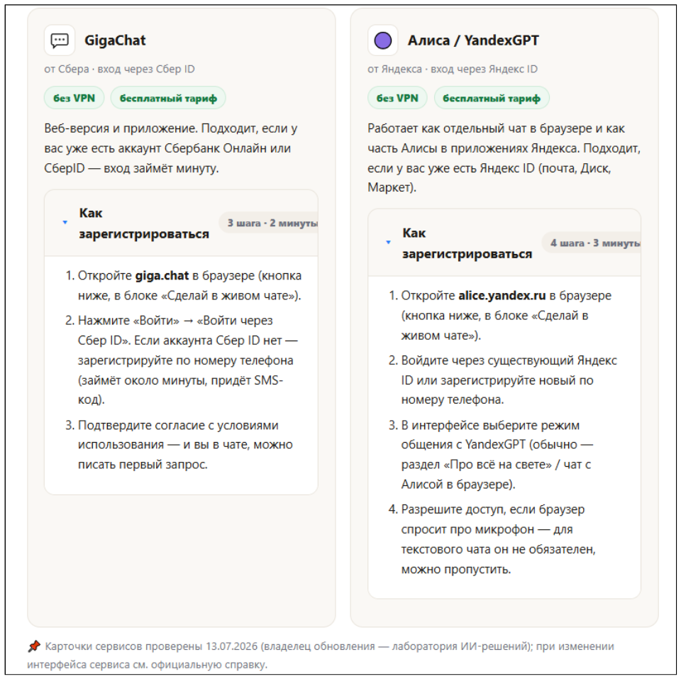
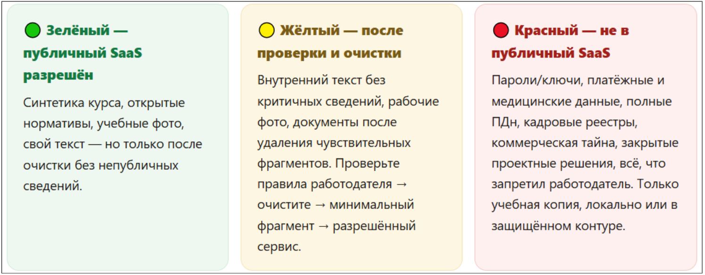

Старт: готовим инструмент
На этом уроке вы за 15 минут зарегистрируетесь в бесплатных нейросетях без VPN, узнаете три «нельзя» при работе с ИИ и сделаете свой первый запрос.


Прежде чем решать рабочие задачи с ИИ, нам понадобится сам инструмент. Речь не про очередной модный инструмент. Сотрудники, которые уже работают с ИИ каждый день, экономят конкретное время, и строительство входит в число отраслей, где это происходит быстрее всего.

💡 Цель нашей программы в том, чтобы вы попали в эти 75%. Это не разовое «попробовал один раз», а рабочая привычка, которая экономит час рабочего дня уже через несколько недель.
Два варианта инструмента, которые работают без VPN
Выбирать между ними не принципиально: логика работы почти одинаковая, и на курсе можно пользоваться каким-то одним или двумя одновременно. Зарегистрируйтесь хотя бы в одной нейросети прямо сейчас.

Правило «трех нельзя»
Три вещи ниже проверяйте всегда, прежде чем писать в публичный ИИ-чат что угодно. Это не запрет, а ваш маршрут для дальнейшей безопасной работы:
🚫 Персональные данные. ФИО, телефоны, паспортные данные, адреса сотрудников и жильцов — это персональные данные (ПДн), их защищает ФЗ-152. Загрузка в публичный ИИ-сервис без согласия — нарушение закона.
🚫 Коммерческая тайна. Цены из смет, условия договоров, реквизиты контрагентов, внутренние объемы и сроки — коммерческая тайна компании. Утечка через чат-бот — такая же утечка, как через почту.
🚫 Запреты работодателя. У вашей компании может быть своя политика по ИИ-инструментам. Она — поверх этих двух правил, а не вместо них.
Все практические задания были созданы на обезличенных данных учебного кейса — ЖК «Уютный дом на Матвеева». Вымышленный объект, вымышленные имена (Иванов И.И., Петров П.П.), никаких реальных ПДн и коммерческой тайны. Берите эту же привычку в свою реальную работу: прежде чем вставить документ в чат — уберите из него ФИО, суммы и реквизиты.
Светофор данных: маршрут, а не запрет
Рабочий формат курса — это использование публичного SaaS по риск-модели: контур зависит от класса данных, а не блокируется целиком. Подробный разбор с примерами документов вы попробуете выполнить в интерактивном тренажере ниже.

🔍 Мини-чек SaaS-аккаунта, прежде чем начать: проверьте — чей это аккаунт (личный или корпоративный), хранится ли история переписки, есть ли доступ по ссылке, что сервис делает с вашими данными (условия использования, обучение моделей на ваших запросах).
Бесплатные vs платные нейросети
У обоих сервисов есть платные тарифы с более мощными моделями и увеличенными лимитами — но все, что нужно для прохождения программы, укладывается в бесплатный тариф.
| Что сравниваем | Бесплатная версия | Платная версия |
| Число запросов в день | Лимит есть, но достаточен для ежедневной практики курса | Лимит выше или снят — уточняйте на сайте сервиса |
| Мощность модели | Хватает для задач курса: письма, черновики, анализ текста | Более крупная модель — для сложных многошаговых задач |
| Работа с файлами / документами | Базово доступна | Более высокие лимиты по объёму и числу файлов |
| Стоимость | 0 ₽ | Уточняйте актуальные цены на сайте сервиса |
Для прохождения программы достаточно бесплатной версии, поэтому начните с бесплатного тарифа. Если после обучения ИИ станет ежедневным рабочим инструментом — вопрос о платном тарифе будет решать смысл, а не наоборот.
Первый запрос за 10 минут
Вы зарегистрировали ИИ-чат, знаете, что ему можно показывать, а что нет, и получили первый ответ. На следующем уроке разберем, как ИИ на самом деле «думает» и почему он иногда уверенно ошибается.
Итоги первого урока: инструмент готов, можно начинать плодотворное обучение. Желаем успехов!